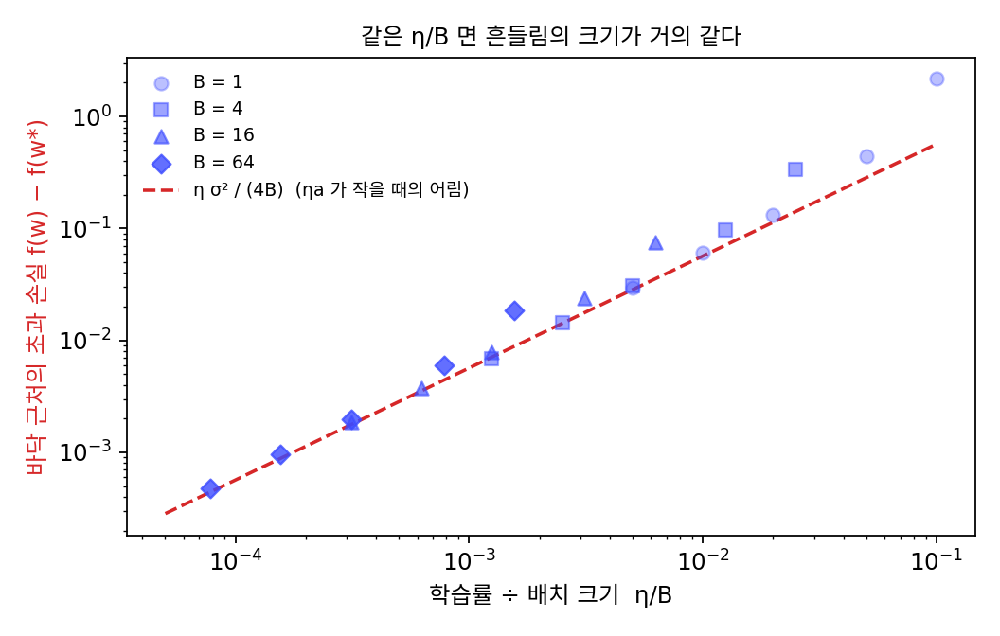

노이즈 플로어: 학습률을 고정하면 손실의 바닥 근처에서 맴돈다
정확한 그래디언트로 걷는 경사하강은 바닥에 가까워질수록 그래디언트가 작아져서 스텝이 저절로 짧아졌다. 그런데 미니배치로 어림한 그래디언트는 바닥에서도 0이 되지 않는다. 배달 1000건 회귀의 바닥에서 참 그래디언트는 0이지만, 한 건짜리 그래디언트는 표준편차 4.76으로 흩어져 있었다. 스텝이 저절로 짧아지지 않는다면, 학습률을 고정한 확률적 경사하강은 바닥에 닿지 못하고 그 언저리를 계속 돌아다닐 것이다. 얼마나 멀리까지 돌아다니고, 그 거리는 무엇이 정할까?
배치 1·10·100으로 같은 학습률 0.05
배달 1000건 회귀를 w = 0에서 출발해 학습률 η = 0.05로 고정하고, 배치 크기만 1, 10, 100으로 바꿔 3000스텝씩 걸어 보자. 1000건을 모두 쓰는 경사하강이라면 열 스텝 만에 손실이 바닥값 1.0899에 닿는다. 배치 크기 100은 열 스텝 뒤 1.0899로 경사하강과 거의 같고, 10은 1.1039, 1은 3.9734다. 그런데 백 스텝 뒤에는 순서가 이상해진다. 배치 크기 100은 1.1267, 10은 1.1200으로 열 스텝 때보다 오히려 높고, 배치 크기 1은 1.8967이다. 배치 크기 1에서는 100스텝 뒤에도 손실이 6.03까지 튀어 오르는 스텝이 있는데, 손실이 바닥에 닿았다가 다시 올라가고 그 둘레를 오르내리는 것이다.
얼마나 높이 오르내리는지를 재려고, 뒤쪽 2000스텝 동안 손실이 바닥값보다 얼마나 높은지(초과 손실)를 평균 냈다. 미니배치를 뽑는 씨앗을 20개 바꿔 돌린 평균이다.
| 배치 크기 B | 초과 손실의 평균 (잰 값) | 식 ησ²/(2B(2 − ηa)) |
|---|---|---|
| 1 | 0.444 | 0.383 |
| 10 | 0.0388 | 0.0383 |
| 100 | 0.00385 | 0.00383 |
배치 크기가 열 배가 될 때마다 초과 손실은 거의 정확히 열 분의 일이 되어, 표준편차가 아니라 분산처럼 줄어든다. 배치 크기에 반비례하는 초과 손실이 어디서 나오는지 따라가 보자. 바닥까지의 거리를 dₖ = wₖ − w*로 두면, 이 회귀의 참 그래디언트는 a·dₖ이다(a는 곡률, 이 회귀에서는 거리 제곱의 평균 10.37이다). 한 스텝은 dₖ₊₁ = (1 − ηa)dₖ − ηξₖ가 된다. 스텝마다 거리가 (1 − ηa)배로 줄어드는 효과와, 노이즈가 ηξ만큼 더하는 분산이 맞선다. 오래 걸으면 두 효과가 비기는 곳에서 거리의 분산이 더는 바뀌지 않는다. 그 분산을 v라 하면 v = (1 − ηa)²v + η²σ²/B이므로 바닥 근처에서 파라미터가 흩어진 정도(분산)와 초과 손실은 다음과 같다.
σ² = 22.67, a = 10.37을 넣으면 표의 셋째 칸이 나온다. 배치 크기 1에서만 식이 잰 값보다 조금 작은데, w가 바닥에서 멀리 돌아다니면 한 건짜리 그래디언트가 바닥에서 잰 σ보다 더 크게 흩어지기 때문이다. 이렇게 학습률을 고정한 확률적 경사하강이 바닥에 닿지 못하고 맴도는 손실의 높이를 노이즈 플로어 (학습률을 고정한 확률적 경사하강이 바닥 근처에서 맴도는 손실의 높이 / noise floor)라 하자. 식의 마지막 꼴이 이 절의 핵심이다. ηa가 2보다 충분히 작으면 노이즈 플로어는 학습률과 배치 크기의 비 η/B에 비례한다. 학습률을 반으로 줄여도, 배치 크기를 두 배로 키워도 노이즈 플로어는 반이 된다.

ML에서: 배치를 키우면 학습률도 키운다
노이즈 플로어가 η/B로 정해진다는 것은 실무의 규칙 하나로 이어진다. 프리야 고얄(Priya Goyal)과 동료들은 2017년 논문 「정확한 대형 미니배치 SGD: 이미지넷을 한 시간에 학습하기(Accurate, Large Minibatch SGD: Training ImageNet in 1 Hour)」에서 다음 규칙을 내세웠다. 「미니배치 크기를 k배 하면 학습률도 k배 한다.」 그들은 이것을 선형 배율 규칙(linear scaling rule)이라 불렀다. 배치 크기 256에 학습률 0.1을 쓰던 ResNet-50(층을 건너뛰는 잔차 연결을 쓴 50층 합성곱 신경망)을 배치 크기 8192(GPU 256개)에서 학습률 3.2로 학습해, 정확도를 잃지 않고 한 시간 만에 이미지넷(이미지 약 128만 장을 1000가지로 분류하는 데이터) 학습을 끝냈다. 논문은 이 규칙을 알렉스 크리제프스키(Alex Krizhevsky)가 2014년에 이미 썼다고 적었다.
논문의 설명은 이렇다. 배치 크기 n으로 k스텝 가는 것과 배치 크기 kn으로 한 스텝 가는 것은, k스텝 동안 그래디언트가 거의 바뀌지 않는다면 학습률을 k배 했을 때 같은 곳에 닿는다. 그러면서 이 가정이 깨지는 경우도 둘 적었다. 하나는 신경망이 빠르게 바뀌는 학습 초반이고, 다른 하나는 배치 크기를 끝없이 키울 때다. 이미지넷에서는 8000쯤을 넘자 정확도가 빠르게 나빠졌다. 학습 초반의 문제는 이 장의 끝 워밍업에서 다시 만나고, 배치 크기를 끝없이 키우는 문제는 아래 문제 6에서 직접 계산해 본다.
문제 4. 버스 시간에 맞춰 집을 나서기
매일 같은 버스를 타는데, 버스가 오는 시각은 날마다 표준편차 4분쯤 들쭉날쭉하다. 어제 지각한 시간을 보고 오늘 나서는 시각을 「어제 지각한 분 × r」만큼 앞당긴다(일찍 도착했으면 그만큼 늦춘다). (가) r = 1이면 나서는 시각은 날마다 얼마나 들쭉날쭉해지는가? r = 0.5, 0.1이면? (나) r을 작게 하면 잃는 것은 무엇인가? (다) 이 규칙은 학습률을 고정한 확률적 경사하강과 무엇이 같은가?

r = 1이 제일 좋을 것 같아요. 어제 5분 늦었으면 오늘 5분 일찍 나가는 거니까 정확히 맞추는 거잖아요.

어제 5분 늦은 게 내가 늦게 나서서였을까요, 버스가 늦게 와서였을까요?

아, 그건 모르죠. 버스 운까지 그대로 따라가면 나서는 시각이 버스 운만큼 흔들려요.
얼마나 흔들리는지 흉내 내 볼까요?
20만 날을 흉내 내 보니 r = 1에서 나서는 시각의 표준편차가 4.00분, 버스의 들쭉날쭉함 4분과 같아요. r = 0.5면 2.31분, 0.1이면 0.915분으로 줄어요.

식으로는 4 × √(r/(2 − r))야. 노이즈 플로어 식에서 ηa 자리에 r이 들어간 꼴이고.
(나)는요? r을 작게 하면 잃는 건요?
처음에 10분 늦게 나서던 시각을 바로잡는 데 오래 걸려요. r = 0.5면 하루에 남은 차이가 반이 되지만, 0.1이면 하루에 10%만 고치니까 버스 운을 빼고 셈해도 열흘 뒤에 3.49분이 남고, 1분 아래로 줄기까지 22일이 걸려요.

그러면 빨리 고치고 싶을 때와 정확히 맞추고 싶을 때 r을 어떻게 하면 좋을까요?

처음에는 r을 크게 해서 빨리 다가가고, 어느 정도 맞춰진 다음에는 r을 줄여서 버스 운에 덜 휘둘리게 하면 돼요. 고정된 r 하나로는 고치는 속도와 정확도를 둘 다 가질 수 없어요.

모의고사 한 번 망쳤다고 공부 계획을 전부 갈아엎는 게 r = 1이네요. 그러면 다음 시험 운에 또 휘둘리고요.
문제 5. 노이즈 플로어 식의 끝
노이즈 플로어 식 Var[w] = ησ²/(Ba(2 − ηa))을 배달 1000건 회귀(σ² = 22.67, a = 10.37)에 쓴다. (가) B = 10, η = 0.1일 때 초과 손실은 식으로 얼마이고, 어림 ησ²/(4B)로는 얼마인가? (씨앗 20개로 잰 값은 0.1222다.) (나) η를 0.15, 0.19로 키우면 식과 어림은 각각 어떻게 되는가? (다) 식은 왜 ηa < 2에서만 뜻을 갖는가? 경사하강의 학습률 상한과 이어서 말하라.
(가)는 식으로 0.1177, 어림으로 0.0567이야. 잰 값 0.1222는 식에 가까워. 어림은 반밖에 안 되네.
ηa가 얼마일 때 어림이 맞을까요?

어림은 2 − ηa를 2로 놓은 거니까… ηa가 0에 가까워야 해요. 여기서는 ηa = 1.04라서 2 − 1.04 = 0.96, 거의 반이에요.
(나)에서 η를 키우면요?
η = 0.15면 ηa = 1.56이라 식은 0.382, 어림은 0.085이고, 0.19면 ηa = 1.97이라 식은 7.19, 어림은 0.108이야.
식은 끝없이 커지는데 어림은 0.1 언저리에서 거의 안 변하네.
그럼 ηa가 2를 넘으면 분모가 음수니까 분산이 음수가 돼요. 말이 안 되는데요.

노이즈가 하나도 없을 때 dₖ₊₁ = (1 − ηa)dₖ는 ηa가 2를 넘으면 어떻게 되었죠?

배율의 크기가 1을 넘어서 스텝마다 멀어져요. 학습률의 상한 2/L이었어요.
노이즈까지 있으면요?
멀어지는 데다 노이즈까지 쌓이니까 분산이 비기는 곳이 아예 없는 거고요. 그래서 식이 음수로 나오는 건 「분산이 더는 바뀌지 않는 상태가 아예 없다」는 뜻이네요.

ηa = 2에 다가가면 확률적 경사하강은 터지기 전에 이미 노이즈 플로어가 끝없이 높아지네요. 노이즈가 없던 경사하강에서는 2/L 바로 앞까지 괜찮았는데, 노이즈가 있으면 그 앞에서부터 이미 나빠지는 거예요. 등비급수 Σr²ᵏ이 r → 1에서 발산하는 것과 같은 계산이에요.
문제 6. 선형 배율 규칙은 어디까지 통하나
배달 1000건 회귀에서 배치 크기 1, 학습률 0.01로 학습하다가, 선형 배율 규칙에 따라 배치 크기를 B로 키우면서 학습률을 0.01·B로 키운다. (가) B = 2, 4, 8로 키우면 노이즈 플로어는 어떻게 되는가? (나) B = 16, 18, 20에서는? (다) 규칙이 깨지는 배치 크기를 학습률의 상한으로 어림하라. (풀어 본 뒤 위젯 1의 「문제 6 불러오기」로 확인해 보자.)
η/B가 늘 0.01이니까 노이즈 플로어는 다 같겠죠. 위젯에서 B = 1, η = 0.01이면 씨앗 20개 평균이 0.0613이에요. 2, 4, 8에서는 0.0640, 0.0730, 0.0997이요. 어, 조금씩 올라가네요.
16에서는요?

0.384요! 18에서 1.33이고, 19에서는 씨앗에 따라 손실이 수백까지 튀어서 평균이 245예요. 20은 318스텝 안에 터져요. 같은 η/B인데 왜 이래요?
노이즈 플로어 식의 2 − ηa를 봐. η = 0.01·B이니까 B가 커지면 ηa도 커져. B = 8에서 ηa = 0.83이라 분모가 1.17이고, 16에서 1.66이라 분모가 0.34야. η/B가 같아도 2 − ηa가 작아지면 노이즈 플로어가 올라가.
그러면 (다)는요? 노이즈가 없다고 쳐도 넘을 수 없는 선이 있었죠.
학습률이 2/a = 0.193을 넘으면 경사하강도 터지죠. 0.01·B < 0.193이어야 하니까… B는 19까지예요.

그래서 19는 경계 바로 앞이라 수백까지 튀었고, 20은 아예 넘어서 터졌구나.
그럼 선형 배율 규칙은 어디까지 통한다고 말할 수 있을까요?
학습률이 학습률의 상한보다 한참 작을 때까지만요. 배치를 키워 학습률이 상한에 다가가면 더는 학습률을 같이 키울 수 없어요.
고얄 논문에서 이미지넷 배치를 8000쯤 넘게 키우자 정확도가 나빠졌다는 게 이런 벽이었을 수도 있겠네요. 조별 과제에 사람을 두 배 넣으면 두 배 빨리 끝날 줄 알았는데, 발표 자료는 한 사람이 합쳐야 해서 어느 이상은 안 빨라지는 것처럼요.
민준 학생 말처럼 「일 수가 두 배면 일하는 사람도 두 배」라는 셈이 통하는 범위가 있어요. 이 회귀에서는 그 범위의 끝을 2/a가 정했어요. 신경망에서는 곡률이 자리마다 바뀌니 그 끝이 어디인지는 실험으로 찾아야 해요.